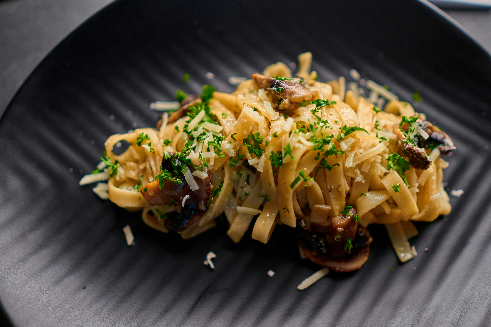

Home
Mushroom pasta

A delicious finnish mushroom pasta
In this recipe we'll be making a mushroom pasta, an european cuisine with a finnish twist
Ingredients:
- 1 tbsp olive oil
- 1 summer onion
- 2 garlic clove
- 250 g mushrooms, e.g. funnel taxes
- 1/2 tsp fennel seeds
- 1 tsp thyme
- 1/2 tsp rosemary
- salt and black pepper
- 150g of creamy white sauce
- chili flakes
Steps:
- Finely chop the onion and garlic. Clean the mushrooms.
- Put the pasta to cook according to the instructions on the package.
- Sauté the onions and garlic in oil. Add the mushrooms and bring the liquids to a boil. Add the spices, sauté for a while.
- When the pasta is ready, drain it, but leave half dl of boiling water aside.
- Add the pasta to the mushrooms and 1/2 dl of pasta cooking water. Let the liquid boil and swirl the pasta properly with the sauce and spices.
Finally, add the light sauce, let it warm up and stir thoroughly. If necessary, add salt and pepper.
- If desired, sprinkle a little olive oil, mild chili flakes and a pleasant cheese,
such as pecorino or parmesan, on top of the finished portion, if you have any.